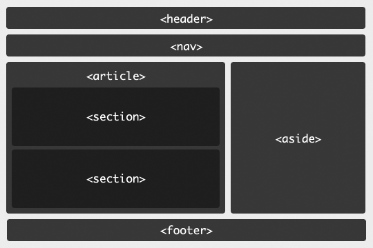

HTML5 introduce varios elementos estructulares que podemos utilizar en lugar de <div>s para organizar nuestro contenido de una manera más semántica.
Repasemos algunos de ellos:
<header> se utiliza para representar la cabecera de un documento o de una sección del documento.
Lo normal es que contengan algun elemento <h1…h6>, aunque también pueden llevar otra información relativa a la información que encabezan (por ejemplo, la fecha de publicación o el autor de un artículo).
“The header element” — Richard Clark.
<nav> representa la navegación de un documento o página. Su contenido son enlaces a otros documentos o a secciones internas del mismo documento.
No todos los links de una página deberían pertenecer a un elemento <nav>, solamente aquellos que sean parte de la navegación principal de la página.
“Semantic navigation with the nav element” — Tom Leadbetter.
El elemento <article> lo utilizaremos cuando queramos representar una sección de un documento cuyo contenido tenga sentido por si mismo independientemente de su contexto.
Algunos casos donde es apropiado utilizar <article> podrían ser un post en un foro, un artículo de un blog, una noticia en un periódico o un comentario de un usuario.
“The article element” — Tom Leadbetter.
Utilizaremos <section> para identificar un grupo de contenido temático. Puede tener una cabecera propia.
Un ejemplo de uso para <section> podrían ser las distintas secciónes en una página de inicio o en un artículo largo.
“The section element” — Bruce Lawson.
<aside> representa una sección de la página que contiene contenido relacionado o complementario al contenido principal.
Si el elemento <aside> se encuentra dentro de un <article> se entenderá que su contenido está relacionado al del artículo. Si por el contrario no está contenido en ningun <article> puede funcionar como un sidebar de la página.
“Aside Revisited” — Mike Robinson.
<footer> se utiliza para representar el pie de un documento o de una sección de un documento.
Suele contener metadata acerca de la sección a la que pertenece como copyright, datos del autor, enlaces relacionados, etc.
“The Footer Element Update” — Jack Osborne.
Una estructura muy básica de una página podría ser algo así:
Las tablas y los formularios son objetos complejos que requieren combinar varios elementos HTML.
Los elementos relacionados a las tablas, se agrupan dentro del elemento <table> y se utilizan para organizar contenido tabular.
La estructura básica de una tabla se compone de celdas (<td>) agrupadas dentro de filas (<tr>).
Una lista completa de los elementos de tabla:
<caption><col><colgroup><table><tbody><td><tfoot><th><thead><tr>En web los formularios serán los encargados de capturar información del usuario para posteriormente procesarla, aunque esto último no será tarea del HTML sino de lenguajes de programación back-end como PHP.
Para crear un formulario utilizaremos el elemento form y dentro suyo iremos colocando todos los campos de entrada, desplegables y botones necesarios.
Hay varios atributos que puede tener el elemento form pero los dos más importantes seran action y method.
El primero contendrá la URL donde será enviada la información que recoja el formulario para ser procesada por el servidor, mientras que el segundo será el método HTTP que utilizara el navegador para enviar la información.
Los elementos que utizaremos dentro de un formulario son:
<button><datalist><fieldset><input><keygen><label><legend><meter><optgroup><option><output><progress><select><textarea>